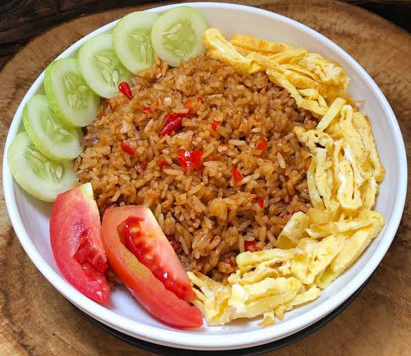

Heat the vegetable oil in a large skillet over medium heat. Add the beaten eggs and scramble until fully cooked. Remove from heat and set aside.
In the same skillet, add the onion and garlic, and sauté until fragrant. Add the frozen peas and carrots and cook for a few minutes until heated through.
Add the cooked rice and soy sauce to the skillet. Toss everything together until well combined. Drizzle with sesame oil and stir to coat.